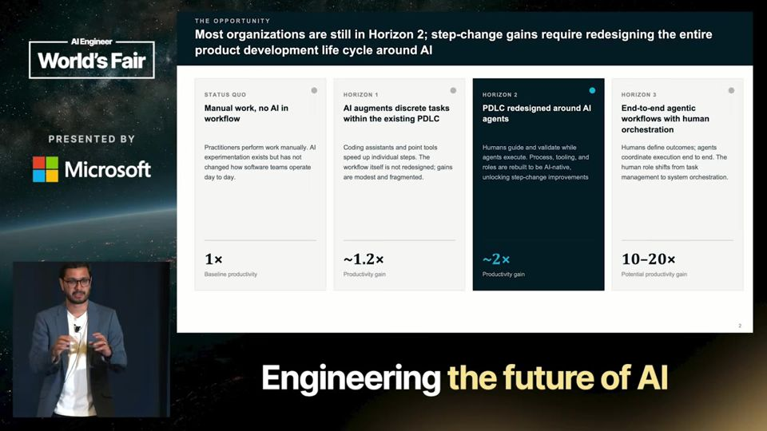
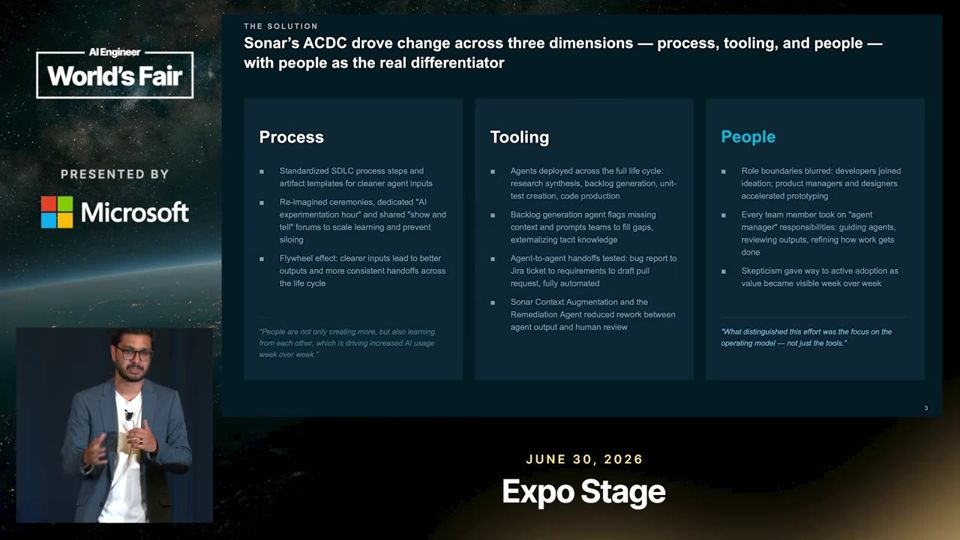
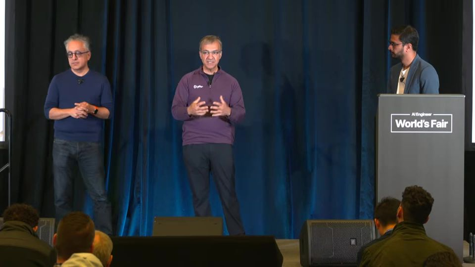

Redesigning How Software Gets Built With AI Agents
Agente em escala depende de processo, ferramenta e gente. A confiança sobe em degraus: revisão, bloqueio, autofix, aprovação e merge automáticos.
Em 3 frases
A McKinsey e a Sonar viram que quase toda empresa diz usar agentes, mas menos de um terço escalou e vê resultado de negócio. Quem escala redesenha o processo inteiro, escolhe boas ferramentas e remodela papéis.
Tariq Shaukat (Sonar) conta que times-farol não bastam para espalhar o hábito. Engenheiros precisam tornar explícito o que sabem de cabeça, duvidar das respostas seguras da IA e virar generalistas.
Ali-Reza Adl-Tabatabai (Gitar, agora Sonar) descreve a escada de confiança: revisão de PR, bloqueio por regra, correção automática, aprovação automática e merge automático, cada degrau liberado quando a precisão convence.
Antes de ler
Muita adoção, pouca escala
Segundo a pesquisa citada, de 80% a 90% das empresas dizem ter implantado IA ou agentes, mas menos de um terço escalou ou vê impacto de negócio. A causa apontada são pilotos (POCs) em ambientes pequenos que nunca viram fluxo de ponta a ponta.
00:40 Adoção é alta, mas menos de um terço escalou.
Horizon 2 versus Horizon 3
A pesquisa põe as empresas numa escala de maturidade. A maioria está no Horizon 2, com agentes guiados e validados por humanos em tarefas do ciclo de desenvolvimento. Poucas chegaram ao Horizon 3, com fluxo automatizado de ponta a ponta e supervisão humana.

Três fatores: processo, ferramenta e gente
Quem escala redesenha o fluxo inteiro em vez de encaixar agentes no processo antigo. Também cuida de agentes, harnesses e camadas de contexto. O fator mais ignorado são as pessoas, porque as fronteiras entre engenheiro, produto e design estão se apagando.

Mais 2 ideias deste talk
Times-farol não espalham o hábito sozinhos
Tariq esperava que os outros times seguissem o exemplo dos times-farol quase por imitação. Não aconteceu. O exemplo e a ferramenta levam parte do caminho, mas falta fazer o time entender por que usa o agente e pensar de outro jeito.
05:45 Imitar o time-farol não muda a forma de pensar.
A escada de confiança até o merge automático
Ali descreve o padrão dos usuários do Gitar. Começam com revisões e análise de falhas de CI. Depois bloqueiam PRs por regra, ativam autofix, aprovam sozinhos mudanças de baixo risco e por fim fazem merge automático. Cada passo depende da precisão que o time observou.

O talk é um painel moderado pela McKinsey com o CEO da Sonar e um executivo do Gitar, produto agora da Sonar. A escada de confiança descreve o produto que eles vendem, e a afirmação de que times chegarão ao merge automático em um ano não traz dados. Os números da pesquisa são citados de memória, sem amostra, método ou definição de escala. A promessa de 10x de produtividade também vem sem fonte.
O que fazer com isso
- Meça antes de pôr agente no fluxo: tempo até produção, vazão de PRs, taxa de retrabalho e satisfação dos engenheiros. Sem essa linha de base, você não prova ganho.
- Escreva as regras que hoje vivem só na cabeça do time (dependências preferidas, estilo de código) em arquivos que o agente leia.
- Suba a autonomia por degraus. Comece com revisão por IA, só bloqueie quando os alertas forem precisos e só aprove sozinho mudanças em áreas não críticas.
- Trate a resposta da IA como a de um estagiário confiante. Defina onde questionar e o que checar antes de aceitar.